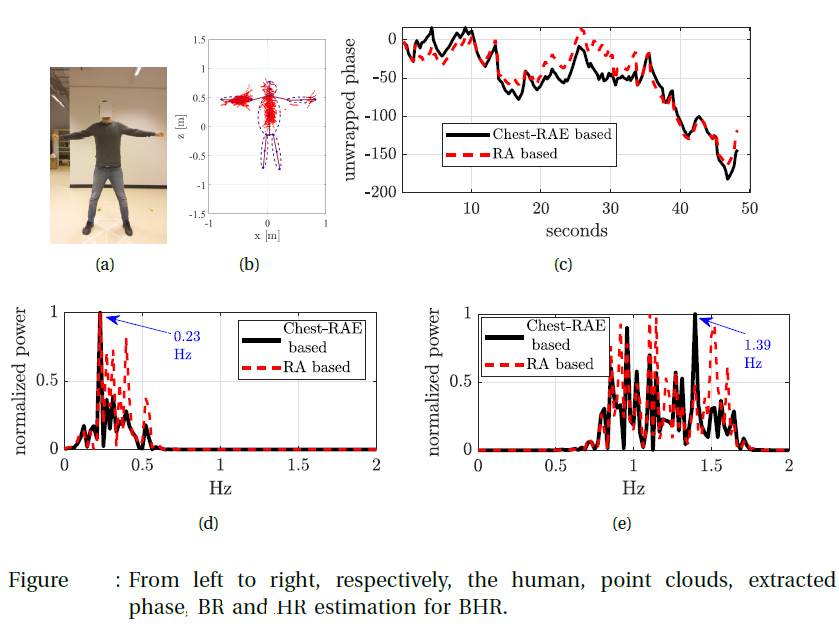
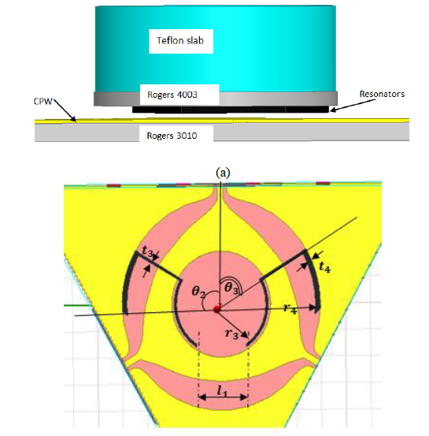
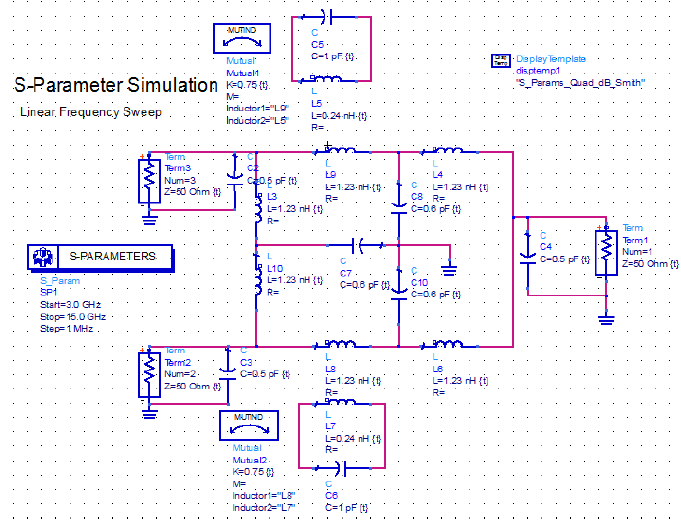

Selected Projects
PhD Thesis: Joint communication and sensing using tiled arrays for human-centeric applications
Designed scenario-aware tiled antenna apertures for multi-user communication and multi-target sensing using optimization-driven channel matching techniques.

Tiled-array architecture for Joint Communication and Sensing

MmWave radar for posture and vital-sign monitoring
M.Sc. Thesis: Microwave Imaging
- Developed microwave imaging systems for industrial monitoring and biomedical applications using inverse scattering methods, HFSS electromagnetic simulations, and qualitative reconstruction algorithms.
- The project included microwave pipeline monitoring, breast tumor imaging, cavity-based sensing systems, and multifrequency electromagnetic imaging techniques.

HFSS simulation of cavity-based microwave imaging system

Pipeline monitoring with microwaves

HFSS simulation of cavity-based breast imaging

Breast tumor detection with microwaves
B.Sc. Thesis: Mechanical RF Switching System
- Designed and developed a mechanical microwave switching structure for RF signal routing applications.
- Investigated RF performance, insertion loss, signal isolation, and switching behavior for microwave systems.

Simulation of RF switching structure in HFSS

Circuit model of the RF switch in ADS